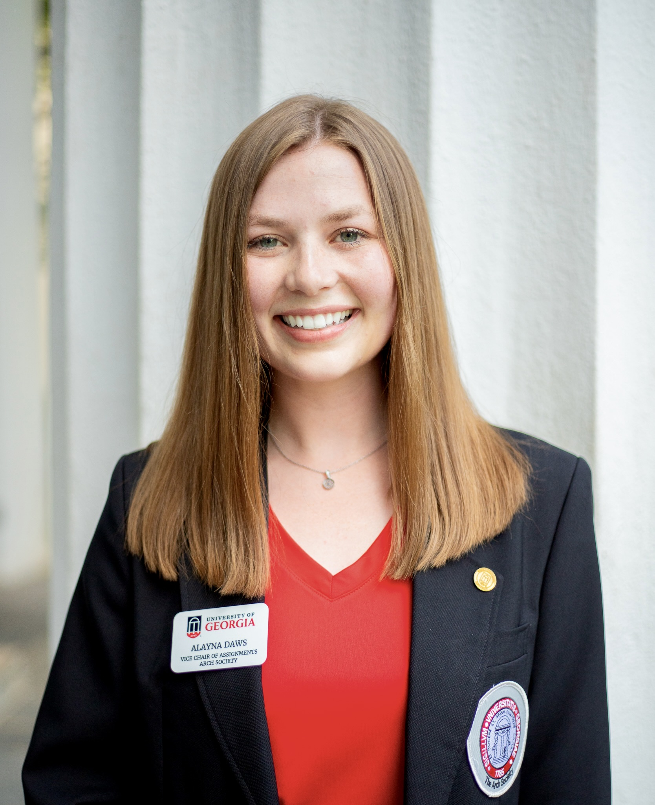

All About Me - Alayna Daws
Introduction
Hi, my name is Alayna Daws. I am a first-year MS student in the Statistics Department. I completed my undergraduate degree in statistics at UGA in May 2022. I am a third-generation UGA student. My blood truly runs red and black :). I am really looking forward to gaining additional experience in real-world, messy data in this course. Also, I am looking forward to learning more about data cleaning, spline models, and the module about big data.

Why Statistics?
My path to statistics has been a little unconventional. I began college pursuing an education in microbiology with the goal to become a virologist. During my first semester at UGA, I took a biostatistics course. This course introduced me to a profession that combined my love for science, love for math, and desire to help others. My first biostatistics professor encouraged me to add a statistics minor, so I added a minor in statistics that evening. Since then, my statistics minor has evolved into a statistics major. Statistics has empowered me to better contribute to research in every stage of the scientific process from experimental design to exploratory data analysis. I love that statistics grants me the ability to “play in everyone’s backyard” (John Tukey)!
Background
- My coding experience is predominantly in R. I also have experience working in Python.
- Currently, I am a teaching assistant for the statistics capstone course all senior undergraduate statistics students take. Currently, I am supporting 22 students across 7 research projects. I am very excited by this opportunity.
- During my statistics capstone class last year, I collaborated with two other capstone students to design an experiment and completed exploratory data analysis around bull elephants in Zimbabwe. I currently TA for the course I completed this project in.
- As a part of another course alongside two other Statistics students, I aided in a survey designed on behalf of Firefly Partners, LLC. Firefly Partners, LLC project is women-owned and delivers solutions that help progressive nonprofits achieve goals. This partnership was facilitated through Riipen.
Future Goals
If I could change anything in the world, I would end gaps in immunization coverage. My personal purpose is to aid in the development of affordable and effective vaccines to help people live a higher quality of life by preventing the spread of common diseases. Following my completion of an MS in Statistics, I have plans to pursue a PhD in (Bio)Statistics. A PhD will open doors and one of those doors is to academia. I have become very interested in becoming a research professor. This career would give me the opportunity to teach and work with passionate students while also aiding in the design and analysis of randomized clinical trials for preventive vaccines. Before entering into a PhD program, I intend to gain industry experience in a career that utilizes and enhances my knowledge and analysis skills.
Life Outside of the Classroom
My most cherished time is time spent with my family. My younger brother just started at UGA and I could not be more excited. On campus, I am involved with an organization called the Arch Society. Members of the Arch Society are considered the goodwill ambassadors of UGA and we wear black blazers while serving. We serve the University through tours, events, and football games. I have been a part of it for two years now and it is one of my favorite parts of UGA. Outside of class, my guilty pleasure is TikTok and watching 80’s rom-coms. I also enjoy spending time with my dog, Roxy.
Fun Fact
In the Summer of 2019, I attended a camp in West Virginia called the National Youth Science Camp (NYSC). While at NYSC, I met two people from every state in the United States as well as people from 10 countries across the Americas! NYSC was one of the most incredible experiences of my life. We had no cell service or internet access during the four-week camp. This really gave me an opportunity to connect with other people my age who were just as passionate about science. I also did lots of outdoor activities I never thought I would try including a 20 mile mountain biking trip. 
Bioinformatics Tutorial
I have attached a link to a tutorial of gathering sequence data, reading the sequence data into R, and creating phylogenetic trees. There are multiple approaches to complete this. The video uses a slighlty different approach I have used in the past. Last Spring, I completed a project using COVID-19 sequence data to create and analyze phylogenetic trees. The R package “phangorn” was used to fit phylogenetic trees from aligned sequence data. The sequence data was imported using the “read.phydat” command as a FASTA file. A distance matrix was calculated using “dist.ml”. Distance-based methods result in a transformation of the sequence data into pairwise distances. I really enjoyed this project and wanted to share some information about Phylogeny in R.